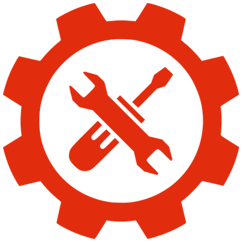

Putting it all together: Combining CSS Tools and Methodologies

By: Isatu (Isa) Conteh
September 16th 2017

What are we trying to do/learn here? Why?
- Highest Level: Figure out how to set up and organize your css
- Understanding why organizing css matters
- Knowing what your options are for css tooling and techniques
- Figuring out how to choose what you need
- And how to implement these solutions in your projects and get them to work well with other front-end (and back-end) tools
Who is this person trying to teach me things?
What does she know?

Background:
- Professional: Developer at the Washington Post
- Professional: Web Developer at Speak Agent
- Volunteer: Women Who Code DC Front-end Lab Lead
- Volunteer: Women Who Code DC Project Lead
Time spent doing front-endy things
- At the Washington Post: ~15% so far
- At Speak Agent: 100% Angular 1.4
- As Front-end Lab Lead: 100%
- *Bonus* - started out with static web pages ~5 years ago: 100%
- **Double Bonus** - use front-end tools for side project: 70%
Where did I get the idea to do this presentation from?
Why we’re focusing on CSS?

What I’m hoping you know
Baseline:
- HTML/CSS
Nice to Haves:
- Used some helpful tools (SASS, LESS, Bootstrap)
- Some experience with integrating front-end with back-end.
Looking to brush up on the fundamentals first? Try Here..
- Codeacademy: https://www.codecademy.com/learn/learn-html-css
- KhanAcademy: https://www.khanacademy.org/computing/computer-programming/html-css
- Building Your first webpage: http://learn.shayhowe.com/html-css/building-your-first-web-page/
- CodeSchool: https://www.codeschool.com/
Section 2 — Tools
Frameworks (CSS, not javascript)
Definition: CSS frameworks are pre-prepared software frameworks that are meant to allow for easier, more standards-compliant web design using the Cascading Style Sheets language. Most of these frameworks contain at least a grid.
Frameworks (CSS, not javascript)
- Bootstrap: http://getbootstrap.com/
- Foundation: http://foundation.zurb.com/
- Materialize: http://materializecss.com/
- Pure CSS: https://purecss.io/
Frameworks: Special Mention
Some other front end programs (usually javascript application tools) also include their own css frameworks. They are used in a similar manner to external css frameworks. One example is:
- Ionic: https://ionicframework.com/
Preprocessors
Definition: Preprocessors are programs that take code written in their own specific language and convert it to CSS.
Preprocessors
- SASS (Syntactically Awesome Stylesheets)
- SCSS (Sassy CSS) http://sass-lang.com/
- LESS http://lesscss.org/
- Stylus http://stylus-lang.com/
Naming Methodologies/Conventions
Definition: Rules and strategies for writing and using css classes, id's etc. that make css codebases easier to read and debug.
Naming Methodologies
- BEM (Block, Element, Modifier) http://getbem.com/
- SMACCS (Scalable and Modular Architecture for CSS) https://smacss.com/
- OOCSS (Object Oriented CSS) https://github.com/stubbornella/oocss/wiki
- ITCSS (Inverted Triangle CSS) https://www.xfive.co/blog/itcss-scalable-maintainable-css-architecture/
Other tools: Libraries and such
Definition: other programs and tools that can help with organizing and using css
Other Tools: Libraries and such
- Flexbox https://flexbox.io/
- Font Awesome http://fontawesome.io/
- Animate.css https://daneden.github.io/animate.css/
Finding Information
Information can most easily be found in the form of:
- Docs (Documentation)
- Blogs (Medium, CSS Tricks etc.)
- Tutorials/ Online Classes (Udemy, Linda.com, Udacity etc.)
What to use, When to use it, When not to use it
Choosing between frameworks
Things to consider/think about:
1. Do you need one?- How large is your project?
- Do you need out of the box features?
- How much time do you have?
- Are there any size or speed requirements?
Choosing between frameworks
Things to consider/think about:
2. What to consider when choosing.- Is there a lot of customization involved?
- Can the design be easily adapted?
- Do you and or your developers have any prior experience with any of them?
Choosing between preprocessors
Things to consider/think about:
1. Do you need one?- Will you be writing a lot of css?
- Where and how is your site being hosted?
- Are you or the people on your team more traditional programmers?
- Again, are there any size or speed requirements?
Choosing between preprocessors
Things to consider/think about:
2. What to consider when choosing.- Are you using any other specific front-end tools that may be more useful with one than the other?
- Again, are you or any of the other devs on your team more familiar with one or the other?
- Is flexibility important (Similar to customization question)?
Choosing between naming methodologies/conventions
Things to consider/think about:
1. Do you need one?- Are you styling a lot of different content?
- Will many people be working on your project?
- Are you worried about maintainability?
- Will a good naming strategy aid in making communication better?
Choosing between naming methodologies/conventions
Things to consider/think about:
2. What to consider when choosing.- How do you discuss your design?
- When figuring out how to style certain parts of a page, how do you break things up?
- And of course, do you and or your developers have any prior experience with any of the available options?
Choosing between libraries
Things to consider/think about:
1. Do you need one?- Are there any extra features you need that can be done in css that don't exist in any of the other formats?
- Will using a library cut down on the work you have to do to create it?
- Do you only need a select few css features?
Choosing between libraries
Things to consider/think about:
2. What to consider when choosing.- Are there any other options?
- Which is easiest to use or incorporate in your existing project?
- Does whatever design change it makes really benifit the project?
Ways to Identify possible conflicts between tools
- Througly study documentation
- Read up on other people's experiences with preferred tools
- Ask for opinions within your network
- Try using tools together on a smaller test/side project
Ways to Identify possible conflicts between tools
You decide to create a blogging platform using the following tools/methods
- Framework: Bootstrap
- Preprocessor: SASS
- Naming Convention: SMACCS
Ways to Identify possible conflicts between tools
You attempt to get comfortable using all three products together and run into the following issue:
-Bootstrap has it's own naming conventions. How do you then use it's features with the naming conventions you created using the SMACCS method
Figuring out how to fix them
- Dig deeper: look up solutions to the specific issue you're having
- Again, ask around
- Experiment
Figuring out how to fix them
After reading up on the issue via a blog post by another developer on Medium, you decide to:
Try incorporating bootstrap in your SMACSS names by extending their features into it using SASS
Setting up your development environment and incorporating tools and solutions
Pretty straight forward...
- Think about how solutions might scale
- Think about other tools that may be necessary to get tools to work together in larger environments
Setting up your development environment and incorporating tools and solutions
You start a new project, pull in SASS, Bootstrap and customised SMACCS. Because the project is bigger:
- You decide to download a local version of bootstrap instead of relying on a CDN
- You decide to compile your SASS with Compass instead of testing it out in codepen
Setting up your development environment and incorporating tools and solutions
3. And you (or your devops person) decide that when it's ready for launch you'll deploy it using AWS for relatively easy compilation rather than just launching it in Github pages.
Quick Mention: Setting up a Style Guide
Style guides are a set of standards for the writing and design of documents, either for general use or for a specific publication, organization, or field.
Useful for/as:
- Onboarding
- Setting standards
- Quick Reference
Quick Mention: Setting up a Style Guide
To learn more, start here: An in Depth Overview of Living Style Guide Tools
That's all Folks! Thanks for Listening
Now for the practice portion of lecture